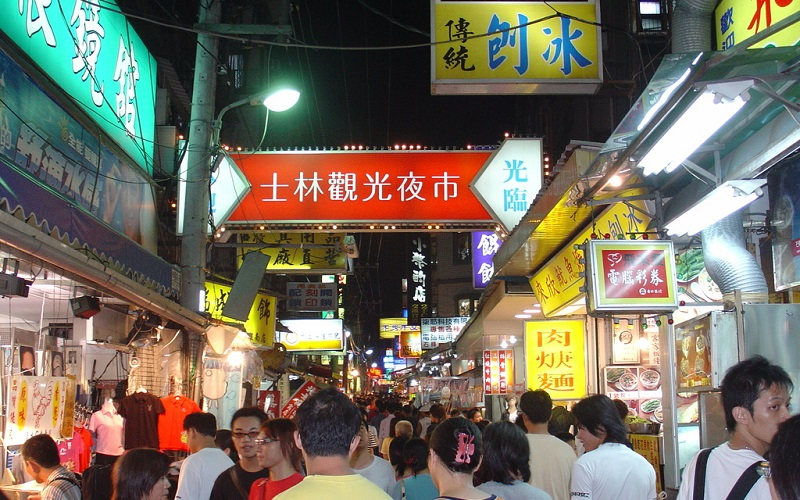
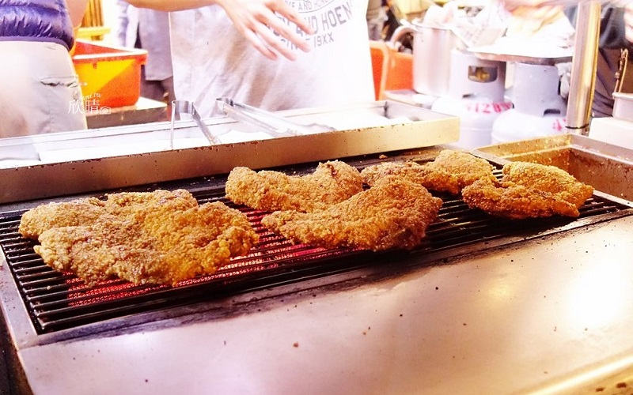
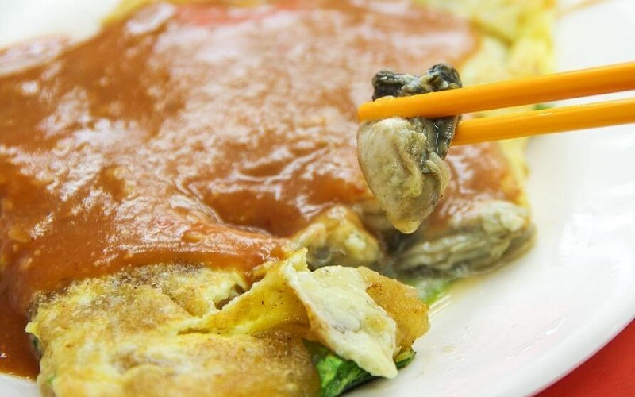

Shilin Nightmarket
Taipei City
Shilin Nightmarket
 Shilin Nightmarket is considered as the second largest nightmarket in Taiwan. The night market is located near the
former location of a wharf on the Keelung River. Agricultural produce from farms in Shilin being shipped to other ports
such as Banka and Dadaocheng would typically be sold in this area. The daytime Shilin Market was formally established
in this area in 1909, and the market was inaugurated in 1913. With the influx of customers, many new businesses
and food vendors began to establish themselves in the area and the Shilin Night Market was born. The Fried chicken fillet
and the Oyster omelet are two of the must-eat snack here. Other foods like bubble tea, fried buns and stinky tofu are also
very popular and can be considered as iconic Taiwanese snacks.
- Best seasons: all year around
- Transportation:
Shilin Night Market is accessible via the Tamsui–Xinyi line (Taipei Metro) at Jiantan Station.
A number of bus routes also serve the area with stops at Jiantan Station, nearby Ming Chuan University,
and Xiao Bei (Hsiao Pei) Street.